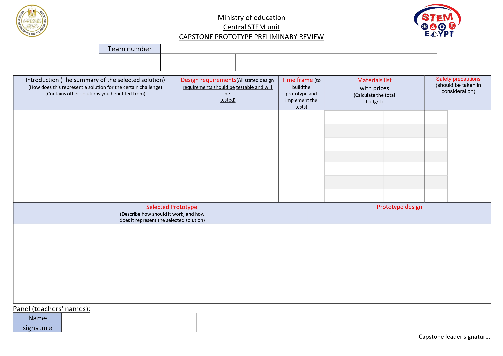
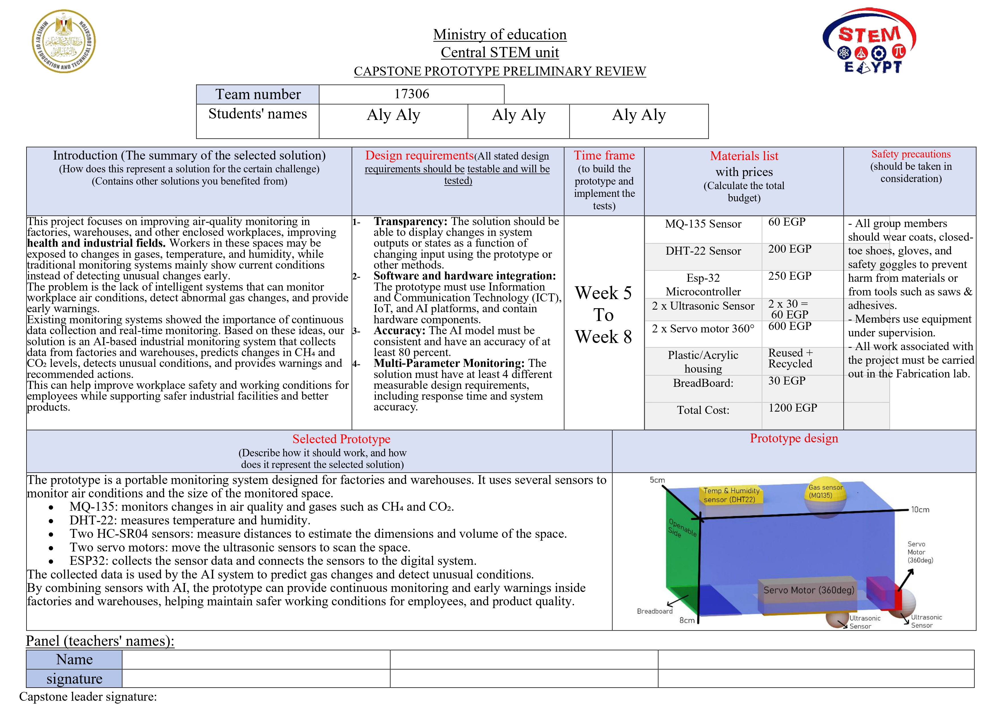
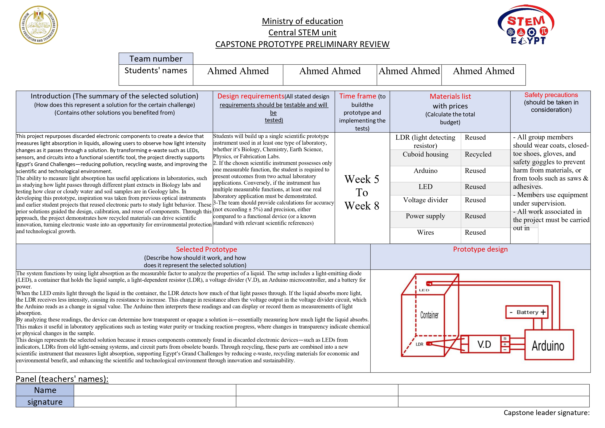

Panel Review
Panel Review Contents
Jump directly to a form section or approved example.
Panel Review overview
The Panel Review is a document that outlines the details of your project’s proposed solution at the beginning of the semester. Once completed, it is submitted to your Capstone Leader for review and approval.
الـ Panel Review ورقة بتوضح تفاصيل الـ proposed solution بتاع مشروعك في بداية التيرم. بعد ما تخلصها، بتقدمها للـ Capstone Leader عشان يراجعها ويوافق عليها.
The Panel Review is not graded and does not contribute toward your degree. Instead, it serves as official confirmation that your Capstone Leader has approved your project idea once they sign the document.
الـ Panel Review مش عليه درجات ومش بيساهم في الحصول على الدرجة العلمية بتاعتك. بدل كده، هو بمثابة تأكيد رسمي إن الـ Capstone Leader وافق على فكرة مشروعك، وده بيتم بمجرد ما يوقّع على الورقة.
Getting your idea approved as early as possible is especially important in Grades 11 and 12. Once you have a project idea, you should submit your Panel Review promptly. If another team has a similar or identical idea and receives approval before you, your Panel Review may be rejected.
إنك تاخد موافقة في أسرع وقت ممكن لفكرتك مهم جداً، خصوصاً في Grade 11 و Grade 12. أول ما يكون عندك فكرة للمشروع، المفروض تقدم الـ Panel Review في أسرع وقت. لأن لو Team تاني عنده فكرة مشابهة أو مطابقة لفكرتك وخد الـ approval قبلك، ممكن الـ Panel Review بتاعتك تترفض.
Since the Panel Review is not graded, it does not have a rubric or a strict list of requirements. However, it follows a specific structure. In this guide, we will explain what to include in each section of the Panel Review to help you present your idea clearly and avoid having it rejected by the Capstone General Committee.
بما إن الـ Panel Review مش عليه درجات، فمفيش rubric أو قايمة متطلبات صارمة لازم تحققها. لكن في نفس الوقت، ليه structure محدد. في الـ guide دي، هنشرح إيه اللي المفروض تحطه في كل Section من الـ Panel Review، عشان تعرف تقدم فكرتك بشكل واضح وتتجنب إنها تترفض من الـ General Capstone Committee.
This guide will formally cover every section of the Panel Review in detail. However, in practice, since the Panel Review is not graded, Capstone teachers and leaders are generally more focused on understanding and approving your core idea than on ensuring that every rubric requirement is included.
الـ guide دي هتشرح بشكل رسمي كل Section من الـ Panel Review بالتفصيل. لكن واقعياً، بما إن الـ Panel Review مش graded، فـ Capstone teachers و leaders غالباً بيكون تركيزهم الأساسي على إنهم يفهموا ويوافقوا على الفكرة الأساسية للمشروع، أكتر من إنهم يتأكدوا إن كل requirement موجود بالحرف.
As a result, you can usually omit some of the requirements mentioned in certain sections, as long as the main idea of your project is communicated clearly and effectively. That said, this guide will still include every detail and requirement for completeness, so you can refer to them whenever necessary.
وعشان كده، غالباً تقدروا تتخطوا بعض الـ requirements المذكورة في Sections معينة، طالما الفكرة الأساسية للمشروع متوصلة بشكل واضح وفعّال. ومع ذلك، الـ guide دي هتحتوي على كل التفاصيل والـ requirements كاملة عشان تبقى شاملة، وتقدروا ترجعوا لها وقت ما تحتاجوا. مش لازم تعملوا الشغل كله مظبوط بالحرف، في شوية راحة هنا.
And here is what it looks like:
ده شكل الـ Panel Review:
Don’t worry about the exact format at the moment, as it sometimes changes, and your capstone teachers will send you a template anyway when it’s time.
متقلقش من الـ format دلوقتي بالظبط، لأنه ممكن يتغير من وقت للتاني، والـ Capstone teachers بتوعكم هيبعتوا لكم template وقت ما تشتغلوا عليه أصلاً كده كده.

Introduction
In this section, you will introduce your project in a way that is similar to how you would present it on your poster.
الحتة دي هتكون شبه introduction الـ poster شوية.
Start by identifying the Grand Challenges your project addresses. Then, connect these challenges to your problem to be solved, clearly explaining the specific issue your project aims to address.
ابدأ بتحديد الـ Grand Challenges اللي مشروعك بيتعامل معاها. بعد كده، اربط الـ Challenges دي بالـ problem to be solved اللي مشروعك بيحاول يعالجها، واشرح بشكل واضح المشكلة المحددة.
Next, discuss the prior solutions you researched, including the large-scale projects you chose to study. Explain what you learned from these projects, such as which aspects worked well, which approaches were unsuccessful, and why. Finally, use these insights to transition into your proposed solution, explaining how your idea addresses the identified problem and builds upon what you learned from existing solutions.
بعد كده، اتكلم عن الـ prior solutions اللي بحثت فيها، بما فيهم الـ large-scale projects اللي اخترت تدرسها. اشرح إيه اللي اتعلمته من المشاريع دي، زي إيه الجوانب اللي نجحت كويس، وإيه الـ approaches اللي ما نجحتش، وليه. وفي الآخر، استخدم الـ insights دي عشان تنتقل للـ solution المقترح بتاعك، واشرح إزاي فكرتك بتتعامل مع المشكلة اللي حددتها، وإزاي بتبني على الـ existing solutions.
Design requirements
Just copy down the design/solution requirements you already wrote in your portfolio in chapter 2. If you haven’t finished that section already, then go to the portfolio guide and learn how to write it down.
ببساطة، انسخ الـ Design/Solution Requirements اللي كتبتها بالفعل في الـ Portfolio في Chapter 2 وحطها هنا وريّح دماغك. لو لسا معملتهاش افتح الـ portfolio guide وروح اتعلم بتتعمل إزاي.
Time frame
In most calendars, the prototype building process spans from week 5 to week 8, so just list it as that (it doesn’t really matter anyways)
في أغلب الـ calendars، عملية بناء الـ Prototype بتكون ممتدة من Week 5 لحد Week 8، فببساطة اكتبها بالشكل ده. (مش فارقة أوي عامة)
Materials list
List an item you used (or will use) in building your prototype, and its price, and write the total budget of the project at the end (You don’t need to list everything, just as much as you can)
اكتب اسم أي item استخدمته أو هتستخدمه في بناء الـ Prototype وسعره، وفي الآخر اكتب إجمالي الـ budget بتاع المشروع. مش لازم تكتب كل الـ materials، اكتب أكتر عدد تقدر عليه.
Safety precautions
Just copy and paste the safety precautions you already listed in your materials and methods, and the following list should contain most things you should take in consideration:
ببساطة، copy-paste لقسم الـ Safety Precautions اللي كتبتها بالفعل في الـ Materials and Methods، والـ list اللي جاية المفروض تحتوي على معظم الحاجات اللي لازم تاخدها في الاعتبار:
- 1- All group members should wear coats, closed-toe shoes, gloves, and safety goggles to prevent harm from materials, or from tools such as saws & adhesives.
- 2- Work should be done in a well-ventilated room to minimize the inhaling of toxic gases or substances, such as spray adhesives.
- 3- Members should wear masks during the cutting of materials like wood or metal to avoid ingesting or inhaling of any harmful particles such as sawdust.
- 4- Members are supposed to use the right tools for their intended purposes, and cover them after use, to prevent injury.
- 5- Members use equipment under supervision.
- 6- Members should leave personal possessions outside working labs.
- 7- Members should be educated on all emergency protocols, such as the method of using fire extinguishers and their locations inside buildings, and many other safety measures taken in consideration
- 8- The construction of the prototype should only be conducted inside the Fabrication laboratory
Selected prototype
Talk about the prototype, how it should work, what is the scientific base behind it, and how it achieves your intended results; think of this like a mini methods section, and then speak about how it represents your solution and fulfills your design/solution requirements.
اتكلم عن الـ Prototype، وإزاي المفروض يشتغل، وإيه الـ scientific basis اللي قائم عليه، وإزاي بيحقق النتائج اللي إنت مستهدفها. اعتبر الجزء ده كأنه mini Methods section. بعد كده، وضّح إزاي الـ Prototype بيمثل الحل بتاعكم، وإزاي بيحقق الـ Design/Solution Requirements بتاعتكم.
Prototype design
This is the last section, and you just need to include a visual illustration of the prototype’s design, which could be a hand drawing, a 3D design picture, or a 2D diagram picture. (It’s ok if your final prototype design is different from the original illustration, so don’t worry too much)
ده آخر Section، وكل اللي محتاج تعمله فيه إنك تحط visual illustration لتصميم الـ Prototype، ممكن تكون رسم إيد، صورة design 3D، أو صورة diagram 2D. (ومفيش مشكلة لو تصميم الـ prototype final طلع مختلف عن الـ illustration original، فـ متقلقش أوي من الموضوع ده)
Approved Panel Review examples
And that’s all. In general, don’t worry too much about the panel review; it isn’t that important. Now, here are two full examples of a filled-out panel review that was approved by a capstone leader.
وبس، كده خلصنا. عموماً متقلقش أوي من الـ Panel Review، لأنه مش أهم حاجة في الدنيا. ودلوقتي، اتعرّف على مثالين كاملين لـ Panel Review اتوافق عليهم من Capstone Leader.

